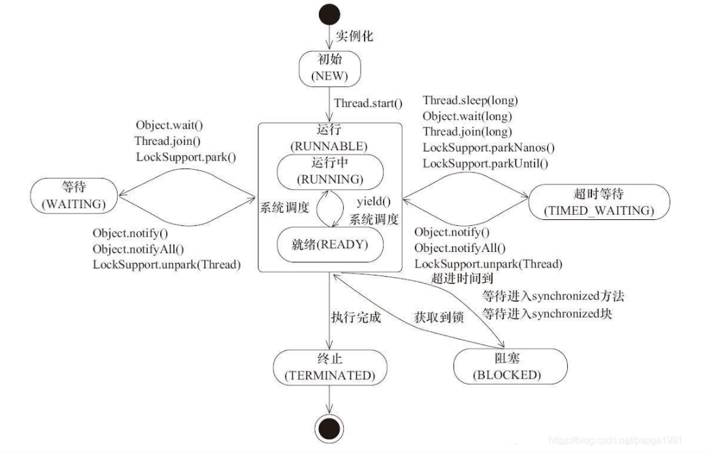
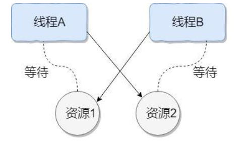

java面试之并发
高并发
前言
在写这篇博客的时候，我是准备跳槽了，跳槽的原因也很简单，我做的岗位没有达到的预期，可以说做的东西跟Java都不搭边，，，，，
在这之前很多东西都已经学过了，但是一直没有用到，所以随着时间的推移也就慢慢的遗忘了。我认为工作的意义除了早日帮老板实现财富自由，还有的就是让我们自己学的东西能够得到巩固吧。
跳不跳槽呢，我认为主要看下面几点：
- 工资有没有达到你的预期
- 你做的东西对你下一次找工作有没有帮助
- 有没有一个可以说服自己不跳槽的理由
就说这些吧。。。
线程和进程的区别
- 一个进程包括多个进程
- 线程是处理机调度的最小单位
- 每条线程并行执行不同的任务
- 不同的进程使用不同的内存空间
- 所有的线程共享一片相同的内存空间（进程主内存），但是呢，每个线程也都拥有自己单独的栈内存来存储本地数据。（JMM内存模型）
实现多线程的方式有哪些
- 继承Thread类：Java单继承，不推荐
- 实现Runnable接口：Thread也是继承了thread接口，推荐
- 实现callable接口：实现callable接口，配合future task使用，有返回值
- 使用线程池：复用，节约资源
使用runnable还是thread
- thread和runnable最大的区别是thread是类，runnable是接口。而Java是不支持多继承的，不过可以实现多个接口，所以至于你用哪个要看你的需求。
- runnable相当于一个作业，而thread才是真正的处理线程，我们需要做的只是去定义这个作业，然后将作业交给线程去处理，这样就达到了松耦合的效果。同时也符合面向对象里的组合使用，也节省了函数的开销。继承thread，不仅有了作业的run方法，还有了thread的其他方法。
- 当需要创建大量的线程的时候，有以下不足：
- 线程生命周期的开销比较高
- 资源消耗问题
- 稳定性问题
- 如果二者可以选择不用那就不用，因为使用这样的裸线程比较容易出现问题，我们还需要去关注线程的数量问题。我们可以使用线程池。executor来使用线程。池化技术可以实现复用，降低了资源的消耗。
thread类中的run方法和start方法有什么区别
start用来启动新创建的线程，而start内部调用了run方法，JDK1.8这样写到“
1
Causes this thread to begin execution; the Java Virtual Machine calls the <code>run</code> method of this thread.翻译：导致线程开始执行，Java虚拟机调用此线程的run方法。这和直接调用run方法不一样，当你调用run方法的时候只会是在原来的线程中调用，没有新的线程启动，start才会启动新的线程。JDK1.8源码注释中这样写到：
1
The result is that two threads are running concurrently: the current thread (which returns from the call to the <code>start</code> method) and the other thread (which executes its <code>run</code> method).new 一个thread，线程就进入了新建状态，调用start方法会启动一个线程并使线程进入就绪状态，当分配到时间片后就可以开始运行了。start会执行线程的相应的准备工作，然后自动执行run方法的内容，这是真正的多线程工作。而执行run方法，会把run方法当作一个mian线程下的普通方法去执行，并不会在某个线程下执行它，所以这并不是真正的多线程工作。
start：用start方法来启动线程，真正实现了多线程运行，这时无需等待run方法体代码执行完毕而直接继续执行下面的代码。通过调用Thread类的start()方法来启动一个线程，这时此线程处于就绪（可运行）状态，并没有运行，一旦得到cpu时间片，就开始执行run()方法，这里方法 run()称为线程体，它包含了要执行的这个线程的内容，Run方法运行结束，此线程随即终止。
run： run()方法只是类的一个普通方法而已，如果直接调用Run方法，程序中依然只有主线程这一个线程，其程序执行路径还是只有一条，还是要顺序执行，还是要等待run方法体执行完毕后才可继续执行下面的代码，这样就没有达到写线程的目的。总结：调用start方法方可启动线程，而run方法只是thread的一个普通方法调用，还是在主线程里执行。这两个方法应该都比较熟悉，把需要并行处理的代码放在run()方法中，start()方法启动线程将自动调用 run()方法，这是由jvm的内存机制规定的。并且run()方法必须是public访问权限，返回值类型为void。
总结： 调用start方法可以启动线程并使线程进入就绪状态，而run方法只是thread的一个普通方法调用，还是在主线程里执行的。
实现并启动线程的两种方法
- 写一个类继承Thread，重写run()方法，然后通过start()方法启动线程
- 实现Runnable接口，实现run()方法，然后用new Thread(Runnable target).start()
多线程原理
相当于玩游戏机，但是只有一个游戏机（相当于一个cpu），start是开始排队，然后当轮到你了，就是相当于处理机给你分到了时间片，然后你就开始玩，就相当于执行你的run方法。当玩完了就相当于run()执行结束了或者被提前打断了相当于调用了stop方法。那么线程就会死亡，死亡的线程是无法再次进行start()的。
总结： 对线程就是分时利用CPU，宏观上让所有的线程一起执行，也叫并发。
并发和并行的区别
- 并行还是并发取决于CPU的核心数量，多一个核心数就可以多处理一个线程，所以如果CPU有多个核心的话，是可以实现并行的。
- 时间点不同。并发是同一时间段发生了很多事，这些事情交替执行。并行是同一时刻这些事情一起执行而不是交替。
线程的6种状态
初始状态
线程被创建（new），但是还没有被start()
就绪状态
线程被start(),但是还没有被分到时间片
运行状态
线程分到时间片，开始运行
阻塞状态
线程因为请求不到资源，或者资源被占用导致处于阻塞状态
等待状态
进入该状态表示当前线程需要等待其他的线程做出一些特定的动作（通知或者中断）
超时状态
此状态不同于等待状态，超时等待状态可以在指定的时间内自行返回的。sleep() wait() join()
终止状态
表示当前线程已经执行完毕

什么是线程死锁
死锁是指两个或者两个以上的线程在执行过程中，由于竞争资源或者彼此通信而造成的一种阻塞的现象。若无外力的干涉，将一直持续下去导致程序无法继续执行下去。此时称系统处于死锁状态或者是系统产生了死锁。这些永远在等待的线程称为死锁线程。

本博客所有文章除特别声明外，均采用 CC BY-SA 4.0 协议 ，转载请注明出处！